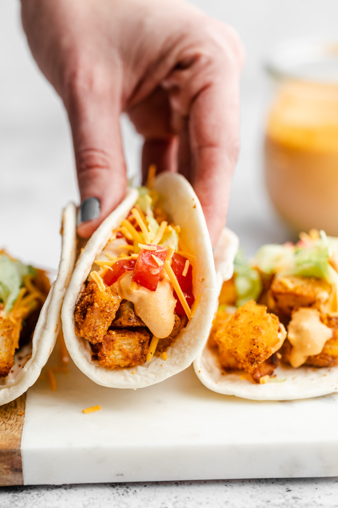

Potato Tacos

Description
This is a copy cat recipe of Taco Bell's addictive potato tacos. The recipe is quick and easy, made with many spices you probably already have in your pantry.
Ingredients
- 3 lbs. russet potatoes, washed
- 1/4 cup neutral oil
- 1/2 cup corn starch
- 1 tablespoon garlic powder
- 1 tablespoon onion powder
- 1 teaspoon salt
- 1/2 teaspoon black pepper
- 1/2 teaspoon paprika
- 1/4 teaspoon cayenne pepper
- 1/4 teaspoon cumin
Instructions
- Add the potatoes to a large pot and fill it with water about 1-2 inches above the potatoes. Bring the water to a boil on high heat. Cook for about 20 minutes (timed from turning on the burner), or until slightly fork-tender. We do not want the potatoes to cook all the way since we will be baking them after this.
- In the meantime, preheat the oven to 425°F and line a full sized baking sheet (or two half sheets) with parchment paper or a silicone mat.
- Grab a small bowl and mix together the corn starch, garlic, onion, salt, pepper, paprika, cayenne pepper, and cumin.
- Once the potatoes are parboiled, dice them into 1″ squares, and add them to a large bowl. Add oil to your potatoes and gently mix together until fully coated. Sprinkle over the spice blend and mix through until they are coated on all sides.
- Transfer seasoned potatoes to the baking sheet(s) and spread out to a single layer.
- Place into the oven and bake for 40 minutes, mixing potatoes halfway through.
- Serve in a flour tortilla with your favorite taco fixings and zesty sour cream.